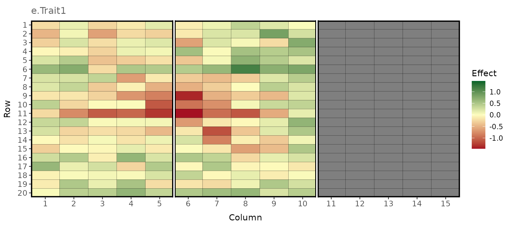
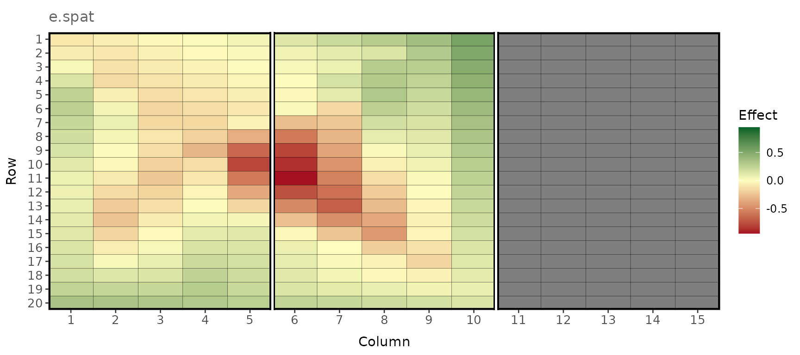
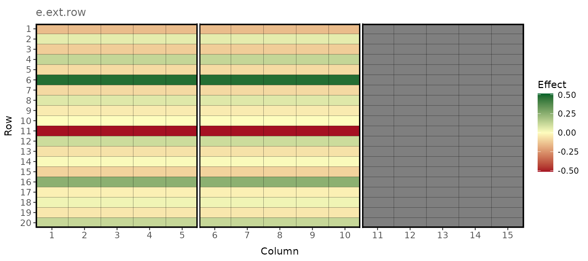
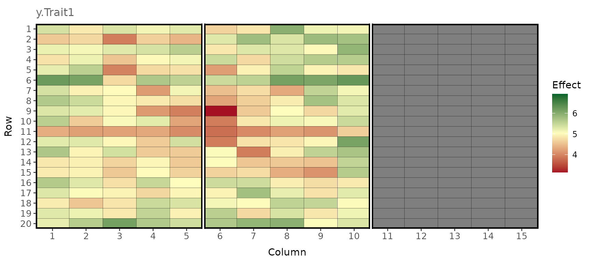

Simulation of plot errors and phenotypes in a plant breeding field trial
Source:vignettes/spatial_variation_demo.Rmd
spatial_variation_demo.RmdBackground
The R package ‘FieldSimR’ enables simulation of multi-environment plant breeding trial phenotypes through the simulation of plot errors and their subsequent combination with (simulated) genetic values. Its core function generates plot errors comprising 1) a spatially correlated error term, 2) a random error term, and 3) an extraneous error term. Spatially correlated errors are simulated using either bivariate interpolation, or a two-dimensional autoregressive process of order one (AR1:AR1).The three error terms are combined at a user-defined ratio.
This document demonstrates how to:
- Simulate plot errors for multiple traits tested in multiple environments, and
- Simulate phenotypes through the combination of the plot errors with simulated genetic values.
The simulation of plot errors requires specification of various simulation parameters that define:
- The field trial layout
- The total error variance
- The spatial error
- Extraneous variation
Phenotypes are then simulated through the
combination of the plot errors with the genetic values stored in the
package’s example data frame gv_df_unstr. The data frame
contains simulated genetic values for two traits in three environments
based on an unstructured model for genotype-by-environment (GxE)
interaction. The simulation of the genetic values is shown in the
vignette on the Simulation
of genetic values based on an unstructured model for
genotype-by-environment (GxE) interaction.
1. Simulation of plot errors
1.1 Field trial layout
We conceive a scenario in which 100 maize hybrids are measured for grain yield (t/ha) and plant height (cm) in three environments. The first and the third environment include two blocks, and the second environment includes three blocks. Each block comprises 20 rows and 5 columns. The blocks are arranged in column direction (“side-by-side”). The plot length (column direction) is 8 meters, and the plot width (row direction) is 2 meters.
ntraits <- 2 # Number of traits
nenvs <- 3 # Number of environments
nblocks <- c(2, 2, 3) # Number of blocks per environment
block_dir <- "col" # Arrangement of blocks ("side-by-side")
ncols <- c(10, 10, 15) # Number of columns per environment
nrows <- 20 # Number of rows per environment
plot_length <- 8 # Plot length; here in meters (column direction)
plot_width <- 2 # Plot width; here in meters (row direction)Note: plot_length and
plot_width are only required when
spatial_model = "Bivariate". The two arguments are used to
set the x-coordinates and y-coordinates required for the bivariate
interpolation algorithm to model a spatial correlation between plots.
Therefore, the assumed unit of length (meters here) has no actual
meaning, and the ratio between plot_length and
plot_width is important rather than the absolute values. We
recommend to use realistic, absolute values for plot_length
and plot_width regardless of the unit of length.
When spatially correlated errors are simulated based on a
two-dimensional autoregressive process (AR1:AR1),
col_cor and row_cor have to be defined
instead.
1.2 Total error
To obtain pre-defined target heritabilities at the plot-level, we need to define the total error variances for the two simulated traits relative to their genetic variances. We assume broad-sense heritabilities at the plot level of H2 = 0.3 for grain yield and H2 = 0.5 for plant height at all three environments. The heritabilities for the six trait x environment combinations are stored in a single vector.
H2 <- c(0.3, 0.3, 0.3, 0.5, 0.5, 0.5) # c(Yld:E1, Yld:E2, Yld:E3, Pht:E1, Pht:E2, Pht:E3)The total genetic variances of the six trait x environment combinations (environments nested within traits) can be extracted from the description of the simulation of the genetic values in FieldSimR::unstructured_GxE_demo.
var <- c(0.086, 0.12, 0.06, 15.1, 8.5, 11.7) # c(Yld:E1, Yld:E2, Yld:E3, Pht:E1, Pht:E2, Pht:E3)We now create a simple function to calculate the total error
variances based on our pre-defined target heritabilities in vector
H2and the total genetic variances in var.
# Calculation of error variances based on the genetic variance and target heritability vectors.
calc_varR <- function(var, H2) {
varR <- (var / H2) - var
return(varR)
}
varR <- calc_varR(var, H2)
round(varR, 2) # Vector of error variances: c(Yld:E1, Yld:E2, Yld:E3, Pht:E1, Pht:E2, Pht:E3)
#> [1] 0.20 0.28 0.14 15.10 8.50 11.701.3 Spatial error
We simulate a spatial error term using bivariate interpolation and assume the proportion of spatial error variance to total error variance to be 0.4 in all three environments. Additionally, we assume a correlation between the spatial error of the two traits. However, since we have no information on the magnitude of the correlation, we randomly sample a value between 0 and 0.5.
spatial_model <- "Bivariate" # Spatial error model.
prop_spatial <- 0.4 # Proportion of spatial trend.
ScorR <- rand_cor_mat(ntraits, min.cor = 0, max.cor = 0.5, pos.def = TRUE)
#> 'cor_mat' is already positive (semi)-definite, matrix was not altered
round(ScorR, 2)
#> 1 2
#> 1 1.00 0.04
#> 2 0.04 1.001.4 Extraneous variation
Extraneous effects can, for example, result from trial management procedures in row and/or column direction, such as soil tillage, sowing or harvesting. We want to simulate extraneous variation in row direction and assume the proportion of extraneous error variance to total error variance to be 0.2. We assume a correlation between the error of the two traits because of extraneous variation and randomly sample a value between 0 and 0.5.
ext_ord <- "zig-zag"
ext_dir <- "row"
prop_ext <- 0.2
EcorR <- rand_cor_mat(ntraits, min.cor = 0, max.cor = 0.5, pos.def = TRUE)
#> 'cor_mat' is already positive (semi)-definite, matrix was not altered
round(EcorR, 2)
#> 1 2
#> 1 1.00 0.42
#> 2 0.42 1.00Note: the proportion of the random error
variance to total error variance is defined as 1 -
(prop_spatial + prop_ext). Hence, prop_spatial and
prop_ext are set with reference to the random error, and
the sum of the two proportions must not be greater than 1.
1.5 Simulation of plot errors
Finally, we use all the parameters defined above with the function
field_trial_error() to simulate plot errors for grain yield
and plant height in the three test environments:
error_ls <- field_trial_error(
ntraits = ntraits,
nenvs = nenvs,
nblocks = nblocks,
block.dir = block_dir,
ncols = ncols,
nrows = nrows,
plot.length = plot_length,
plot.width = plot_width,
varR = varR,
ScorR = ScorR,
EcorR = EcorR,
RcorR = NULL,
spatial.model = spatial_model,
prop.spatial = prop_spatial,
ext.ord = ext_ord,
ext.dir = ext_dir,
prop.ext = prop_ext,
return.effects = TRUE
)Note: by default, the function
field_trial_error() generates a data frame with the
following columns: environment id
(environment), block id, column
id, row id, and the
total plot error for each trait. When
return_effects = TRUE, ‘FieldSimR’
returns a list with an additional entry for each trait containing the
spatial error, the extraneous effect and the random error.
We will now plot the total error for grain yield (“e.Trait1”)
in Environment 1, as well as the spatial error
component, the random error component, and the
extraneous variation. Therefore, we first extract the
required data from error_df and then create an individual
graphic for each of the four simulated error terms.
e_total_env1 <- error_ls$error.df[error_ls$error.df$env == 1, ]
e_terms_env1 <- error_ls$Trait1[error_ls$Trait1$env == 1, ]Total plot error
plot_effects(e_total_env1, effect = "e.Trait1", labels = TRUE)
Spatial error simulated using bivariate interpolation
plot_effects(e_terms_env1, effect = "e.spat", labels = TRUE)
Random error
plot_effects(e_terms_env1, effect = "e.rand", labels = TRUE)Extraneous variation in the row direction
plot_effects(e_terms_env1, effect = "e.ext.row")
2. Simulation of plot-level phenotypes
To simulate grain yield and plant height phenotypes
for our multi-environment maize experiment, we now combine the simulated
plot errors with the genetic values stored in the example data frame
gv_df_unstr. This is done using the function
make_phenotypes(), which allocates genotypes to plots
within blocks according to a randomized complete block design
(RCBD).
Note: more complex field designs require allocation of genotypes to plots using an external R package or software.
gv_df <- gv_df_unstr
pheno_df <- make_phenotypes(
gv_df,
error_ls$error.df,
randomise = TRUE
)
pheno_env1 <- pheno_df[pheno_df$env == 1, ] # Extract phenotypes in environment 1.Simulated phenotypes
plot_effects(pheno_env1, effect = "y.Trait1")
Histogram showing the phenotypes of the 100 maize hybrids for grain yield in the two blocks in Environment 1
ggplot(pheno_env1, aes(x = y.Trait1, fill = factor(block))) +
geom_histogram(color = "#e9ecef", alpha = 0.8, position = "identity", bins = 50) +
scale_fill_manual(values = c("violetred3", "goldenrod3", "skyblue2")) +
labs(x = "Phenotypes for grain yield (t/ha)", y = "Count", fill = "Block")